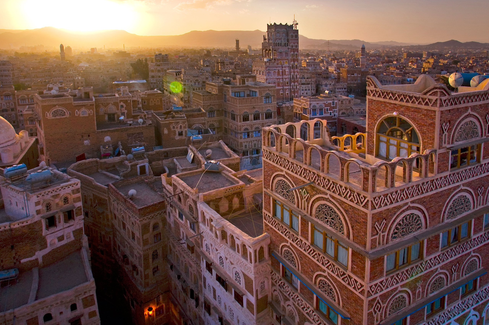

Discover Yemen – The Jewel of the Arabian Peninsula

Yemen is a land of rich history, breathtaking landscapes, and timeless culture. From the mud-brick
skyscrapers of Shibam Hadramaut, to the stunning blue shores of Aden, from the ancient alleys of
Old Sana’a to the untouched wonders of Socotra, Yemen invites you to embark on a journey where
heritage and beauty meet in harmony.
What You’ll See
- Old Sana’a(UNESCO World Heritage Site).

- Shibam Hadramaut – “The Manhattan of the Desert.”

- Socotra Island with its rare trees and pristine beaches.

- The historic Al-Qahira Castle in Taiz.
- Scenic coasts along the Arabian Sea and the Gulf of Aden.
Must-Do Activities
- Wander through Old Sana’a – admire its unique tower houses with stained-glass windows.
- Explore Socotra Island – discover Dragon Blood trees and turquoise beaches.
- Visit Shibam Hadramaut – marvel at its centuries-old mud-brick high-rises.
- Shop in Traditional Souks – spices, frankincense, silver, and handmade crafts.

- Mountain Adventures – trek through terraced villages and taste
Delicious Yemeni Cuisine
- Saltah – the most famous traditional stew, served bubbling hot.

- Mandi – fragrant rice with slow-cooked meat.
- Fahsa – spiced meat dish with fenugreek froth.
- Bint Al-Sahn – sweet layered honey bread with sesame.

- Yemeni Coffee – the original home of Arabica beans.